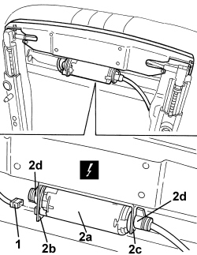
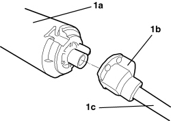

7045J30 FRONT SEAT LIFTING MOTOR, LEFT OR RIGHT - R.R. FOLLOWING ELECTRICAL WIRING CHECK
- Path
- Procedures > 70 FITTINGS > 7045 FRONT SEATS > 7045J FRONT SEAT ELECTRIC MOVEMENTS > 7045J30 FRONT SEAT LIFTING MOTOR, LEFT OR RIGHT - R.R. FOLLOWING ELECTRICAL WIRING CHECK
- Kind
- repair procedure (removal / refitting; the operation number is the code)
- Applies to
- all engines; all production periods; only with equipment: Electric seats
- Interactive page
- https://sloeber94.github.io/elrnDB-aBrrSpdr/en/#/946004166
Applies to: all engines; all production periods; only with equipment: Electric seats
 Removing
Removing
 Refitting
Refitting- Raise the seat until it is in the end of travel position.
Op. 7045A10 FRONT SEAT (ONE), LEFT OR RIGHT - R.R.
1. Disconnect the electrical connection for the motor.
Description | Component |
|---|---|
LEFT FRONT SEAT REAR HEIGHT ADJUSTMENT MOTOR | |
PASSENGER SIDE SEAT RAISING MOTOR |
2. Release the motor (2a), firstly from the retainer (2b), then from the retainer (2c); then move the motor complete with flanges (2d).

Applies to: all engines; all production periods; only with equipment: Electric seats
1. Disconnect the motor (1a) from the flange (1b) for the flexible shaft (1c).

Applies to: all engines; all production periods; only with equipment: Electric seats
Refitting
Removing- Check that the seat lifting motor is not damaged.
- Connect the motor to the flange for the flexible shaft.
- Position the motor and attach it to the retainers.
- Connect the electrical connection for the motor.
Op. 7045A10 FRONT SEAT (ONE), LEFT OR RIGHT - R.R.
- Check that the seat lifts correctly.
Topics linked from this page (3)
- 7045A10 FRONT SEAT (ONE), LEFT OR RIGHT - R.R.
- N125 LEFT FRONT SEAT REAR HEIGHT ADJUSTMENT MOTOR
- N128 PASSENGER SEAT LIFT MOTOR
Topics that link to this page (6)
- 7045A86 FRONT SEAT FRAME (ONE), LEFT OR RIGHT, R.R.
- 7045J29 FLEXIBLE SHAFT FOR FRONT SEAT LIFTING MOTOR (ONE), LEFT OR RIGHT - R.R.
- E3076 ELECTRICALLY ADJUSTABLE SEATS - WIRING DIAGRAM
- E3076 ELECTRICALLY ADJUSTABLE SEATS - COMPONENT LOCATION
- E3076 ELECTRICALLY ADJUSTABLE SEATS - WIRING DIAGRAM
- E3076 ELECTRICALLY ADJUSTABLE SEATS - COMPONENT LOCATION